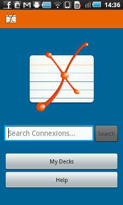

Welcome to QuizCards! QuizCards is an open-source flash cards and quiz app developed by Connexions. Connexions is an online repository of free textbooks and other eductional material, licensed under the Creative Commons attribution license.
Main menu

From the main menu, you can search Connexions for chapters, access your
existing decks of cards, or access this help screen.
Search